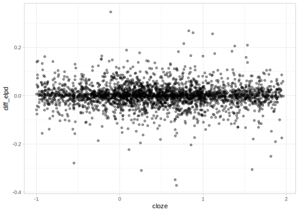

17.3 Testing the N400 effect using cross-validation
Similarly as we did in section 16.2 with the Bayes factor, we revisit section 5.1, where we estimated the effect of Cloze probability on the N400 average signal. We consider two models here, a model that includes the effect of Cloze probability, such as fit_N400_sih from section 5.1.5, and a null model.
We can verify that the likelihood that we fit was appropriate for a hierarchical model that includes an effect of Cloze probability as follows:
## n400 ~ c_cloze + (c_cloze | subj) + (c_cloze | item)In contrast to the Bayes factor, the priors are less critical for cross-validation. Priors are only important in cross-validation to the extent that they affect parameter estimation: As we saw previously, very narrow priors can bias the posterior to undesired values; and unrealistically wide priors can lead to convergence problems. The number of samples is also less critical than with Bayes factor, most of the uncertainty in the estimates of the \(\widehat{elpd}\) is due to the number of observations. However, a very small number of samples can affect the \(\widehat{elpd}\) because the posterior estimation will be affected by the small sample size. We update our previous formula to define a null model as follows:
Now we are ready to estimate PSIS-LOO for each model
##
## Computed from 4000 by 2863 log-likelihood matrix
##
## Estimate SE
## elpd_loo -11092.7 46.7
## p_loo 81.3 2.7
## looic 22185.5 93.4
## ------
## Monte Carlo SE of elpd_loo is 0.1.
##
## All Pareto k estimates are good (k < 0.5).
## See help('pareto-k-diagnostic') for details.##
## Computed from 4000 by 2863 log-likelihood matrix
##
## Estimate SE
## elpd_loo -11095.3 46.5
## p_loo 89.6 3.0
## looic 22190.6 93.0
## ------
## Monte Carlo SE of elpd_loo is 0.2.
##
## All Pareto k estimates are good (k < 0.5).
## See help('pareto-k-diagnostic') for details.The function loo reports three quantities with their standard error
elpd_loois the sum of pointwise predictive accuracy (a larger, less negative number indicates better predictions).p_loois an estimate of effective complexity of the model; asymptotically and under certain regularity conditions,p_loocan be interpreted as the effective number of parameters. Ifp_loois larger than the number of data points or parameters, this may indicate a severe model misspecification.looicis simply-2*elpd_loo, the elpd on the deviance scale. This so-called information criterion is mainly provided for historical reasons: other information criteria like AIC (Akaike Information Criterion) and DIC (Deviance Information Criterion) are commonly used in model selection.
It’s important to bear in mind that the PSIS-LOO approximation to LOO can only be trusted if Pareto \(k\) estimates are smaller than 0.5.
To compare the models, we need to take a look at the difference between elpd_loo and the standard error of that difference:
## elpd_diff se_diff
## fit_N400_sih 0.0 0.0
## fit_N400_sih_null -2.6 2.5Although the model that includes Cloze probability as a predictor has higher predictive accuracy, the difference is smaller than 4 and it’s smaller than two SE. This means that from the perspective LOO-CV, both models are almost indistinguishable! In fact, the same will happen if we compare the model with logarithmic predictability to the linear or null model; see exercise 17.1.
We could also check whether the alternative model is making good predictions somewhere by examining the difference in pointwise predictive accuracy as a function of, for example, Cloze probability. In the following plot we subtract the accuracy of the alternative model by the null model, which means that larger difference show an advantage for the alternative model. However, we see that as far as posterior predictive accuracy goes, both models are quite similar:
df_eeg <- mutate(df_eeg,
diff_elpd = loo_sih$pointwise[, "elpd_loo"] -
loo_sih_null$pointwise[, "elpd_loo"]
)
ggplot(df_eeg, aes(x = cloze, y = diff_elpd)) +
geom_point(alpha = .4, position = position_jitter(w = 1, h = 0))
This is unsettling because the effect of Cloze probability on the N400 has been replicated in numerous studies. We would expect to see that, similarly to Bayes factor, cross-validation techniques will also show that a model that includes Cloze probability as a predictor is superior to a model without it. The reason for the failure of PSIS-LOO (which is also relevant to any cross-validation method) lies in the way we approximate the exact \(elpd\): the predictive density of each observation is based on the true model. In cross-validation approximations, we use out-of-sample observations which are not part of the model that we are fitting. Every time we evaluate the predictive accuracy of an observation, we ignore modeling assumptions. One of the weaknesses of cross-validation is the high variance in the approximation of the integral over the unknown true data distribution, \(p_t\) (Vehtari and Ojanen 2012, sec. 4.5). However, if there are a large number of observations and/or the models under consideration are very different between each other, the differences in predictive accuracy will dwarf the variance and cross-validation can be very useful (see also Piironen and Vehtari 2017). When models are very different, one advantage of cross-validation methods in comparison with Bayes factor is that the selection of priors is less critical. It is sometimes hard to decide on priors that encode our knowledge for one model and this difficulty is exacerbated when we want to assign comparable prior information to models with sometimes a different number of parameters in a different scale. Given that cross-validation methods are less sensible to prior specification, different models can be compared on the same footing. See Nicenboim and Vasishth (2018) for an example from psycholinguistics where K-fold-CV does help in distinguishing between models.
Curiously, cross-validation methods are sometimes criticized because with too much data they will give undue preference to the complex model in comparison to a true simpler model (Gronau and Wagenmakers 2018). Although this can be true for toy examples where we can have unlimited observations, the problems that we face with realistic examples are often very different: The true model is unknown and very likely not under consideration in our comparison (see also Navarro 2019). In our experience, we are very far from the asymptotic behavior of cross-validation, and, in contrast, cross-validation main weakness lies in its lack of assumptions that prevents it from selecting more complex models when the gain in predictions is modest.
17.3.1 cross-validation in Stan
If we want to use real cross-validation in Stan (as opposed to PSIS-LOO), we need to be careful to store the log-likelihood of the held out data, since this is the way we evaluate our model.
17.3.1.1 PSIS-LOO
As we explained earlier, PSIS-LOO (as implemented in the package loo) approximates the likelihood of the held-out data based on the observed data: it’s faster (because we only fit one model), and it only requires a minimal modification of our Stan code. Stan by default only saves the sum of the log likelihood of each observations (in the parameter lp__). If we want to store the log-likelihood of each observation we can do this in the generated quantities block.
Here we add this to the model that assumes a positive effect of attentional load. By using the variable name log_lik, loo package will know where to find the log likelihood of the observations.
generated quantities{
real log_lik[N];
for (n in 1:N){
log_lik[n] = normal_lpdf(p_size[n] | c_load[n] * beta1 + alpha + c_trial[n] * beta2 +
c_load[n] * c_trial[n] * beta3, sigma);
}
}For the null model, we just omit the term with \(\beta_1\) in both the model block and the generated quantities block:
model {
// priors including all constants
target += normal_lpdf(alpha | 1000, 500);
target += normal_lpdf(beta2 | 0, 100);
target += normal_lpdf(beta3 | 0, 100);
target += normal_lpdf(sigma | 0, 1000)
- normal_lccdf(0 | 0, 1000);
target += normal_lpdf(p_size | alpha + c_trial * beta2 +
c_load .* c_trial * beta3, sigma);
}
generated quantities{
real log_lik[N];
for (n in 1:N){
log_lik[n] = normal_lpdf(p_size[n] | alpha + c_trial[n] * beta2 +
c_load[n] * c_trial[n] * beta3, sigma);
}
}Fit the models with the default number of iterations:
fit_pupil_int_pos_ll <- stan(
file = pupil_pos,
iter = 3000,
data = ls_pupil
)
fit_pupil_int_null_ll <- stan(
file = pupil_null,
iter = 3000,
data = ls_pupil
)We compare the models in the following way:
## Warning: Some Pareto k diagnostic values are slightly high. See help('pareto-k-diagnostic') for details.##
## Computed from 6000 by 41 log-likelihood matrix
##
## Estimate SE
## elpd_loo -251.1 5.2
## p_loo 5.2 1.5
## looic 502.1 10.5
## ------
## Monte Carlo SE of elpd_loo is 0.1.
##
## Pareto k diagnostic values:
## Count Pct. Min. n_eff
## (-Inf, 0.5] (good) 38 92.7% 771
## (0.5, 0.7] (ok) 3 7.3% 1133
## (0.7, 1] (bad) 0 0.0% <NA>
## (1, Inf) (very bad) 0 0.0% <NA>
##
## All Pareto k estimates are ok (k < 0.7).
## See help('pareto-k-diagnostic') for details.##
## Computed from 6000 by 41 log-likelihood matrix
##
## Estimate SE
## elpd_loo -255.4 4.6
## p_loo 4.4 1.1
## looic 510.8 9.3
## ------
## Monte Carlo SE of elpd_loo is 0.0.
##
## All Pareto k estimates are good (k < 0.5).
## See help('pareto-k-diagnostic') for details.## elpd_diff se_diff
## model1 0.0 0.0
## model2 -4.3 3.4As it happened in the cross-validation chapter (17), we cannot decide which model has better predictive accuracy according to PSIS-LOO.
17.3.1.2 Exact cross-validation
References
Gronau, Quentin F, and Eric-Jan Wagenmakers. 2018. “Limitations of Bayesian Leave-One-Out Cross-Validation for Model Selection.” Computational Brain & Behavior. https://doi.org/10.1007/s42113-018-0011-7.
Nicenboim, Bruno, and Shravan Vasishth. 2018. “Models of Retrieval in Sentence Comprehension: A Computational Evaluation Using Bayesian Hierarchical Modeling.” Journal of Memory and Language 99: 1–34. https://doi.org/10.1016/j.jml.2017.08.004.
Piironen, Juho, and Aki Vehtari. 2017. “Comparison of Bayesian Predictive Methods for Model Selection.” Statistics and Computing 27 (3): 711–35. https://doi.org/10.1007/s11222-016-9649-y.
Vehtari, Aki, and Janne Ojanen. 2012. “A Survey of Bayesian Predictive Methods for Model Assessment, Selection and Comparison.” Statist. Surv. 6 (0). Institute of Mathematical Statistics: 142–228. https://doi.org/10.1214/12-ss102.